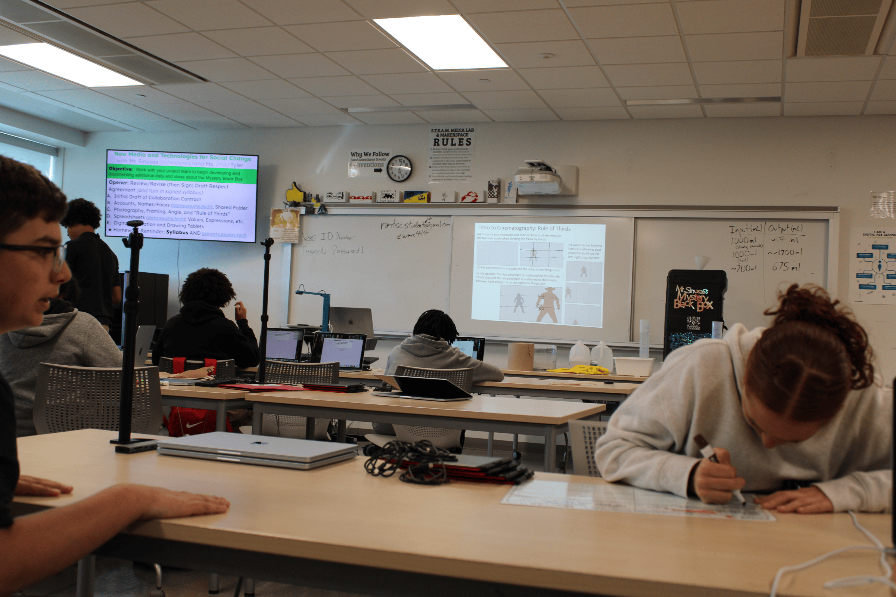

New media and Tech is a required 9th grade course at the Engineering and Science University Magnet School where you lean and apply a diverse set of technology and design skills. In this class we work collaboratively to imagine new digital and physical art, animation, coding, and experiences. We code software and hardware to design and build real objects emerging into the worl of virtual, augmented, and mixed realities.

Screenprinting is a printing method where ink is pushed through a mesh screen to creat a desgin on a surface. It's one of the most popular ways to print on T-shirts, hoodies, posters, bags and more. People use a screen to prepare their design, from there ink is pulled across the screem with a squeegee forcing it throught the mesh onto the material below.

This year we chose a socail problem we were interested in, I chose to focus on the social issue of park pollution because it is a serious problem affectiong our enviroment and our communities. In our project I constructed a design of myself on a screen, from there I procceeded to follow Mr. Sinusis' steps into finalizing my screenprinting project. Finally I pressed the ink through the design onto my finalized box.
Through this work, I showed the most mastery in the Creativity and Innovation competency. I demonstrated originality by creating my own design and using art as a way to bring attention to an important environmental issue. This project helped me grow in how I express ideas visually and turn a concept into a finished, meaningful product.
Genetics is the branch of biology that studies genes, DNA, and how traits are passed from parents to their children. It explains why you inhearit things like eye color, hair texture, or certian health conditions, and how tiny differences in DNA make every person unique.
This year, our class completed a DNA extraction using a toothpick, which we scraped along our gums, and then added the material to a tube with a buffer. After completing DNA extraction, we began PCR by mixing the primer with our student samples. As a result, I matched with 4 other students using the number of repeats from Alleles 1 and 2.
In this expirement I learned that
I’m Alexis, and this website was created for my final project. I wanted to explore two topics that seem unrelated but actually connect through patterns and design: screenprinting and genetics. Screenprinting creates patterns on fabric, while genetics creates patterns in living things. This site explains both topics in a simple and easy‑to‑understand way.
Explain your topic here.
Email: 194291@nhps.net